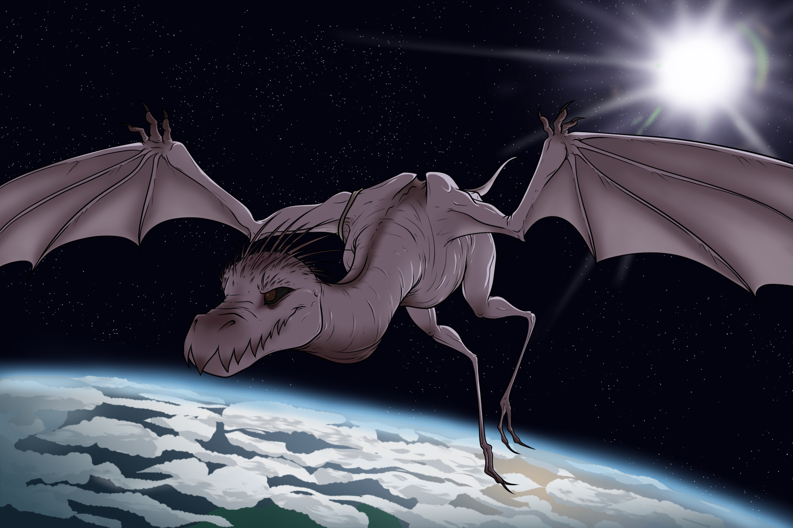

His text got kicked back.
Unable to send. Number not found.
Odd. Brian sent the same text to Mal.
Unable to send. Number not found.
A hard lump formed in his throat. Oh dear. Fran and Mal could take care of themselves Brian knew, but he couldn’t stop the worry from forming. Despite best intentions, Fran had a track record of getting herself into trouble, and of course Mal would tag along with whatever she was planning.
Brian slowed his breathing, deliberately putting his phone down and walking to a mirror to take off his makeup. Earlier that night he had stumbled over a line. Not due to the pressure that happened during a performance, Brian had been doing stage musicals for so long that having people watch him act had long since lost its ability to make him anxious.
Tonight though worry gripped his chest and wouldn't let go. Something… someone had called to him on stage. Not a call that was natural, it was a pulling from his chest; one he hadn't experienced since his now girlfriend and boyfriend had banished the elder god Brian had devoted his life to.
He tried to focus on this feeling, ignoring his fellow actors' chatter and congratulations around him. It was still there, a directionless pull to go somewhere for someone. If it was for Hastur, The King in Yellow, Fran would've felt it as well. But Fran’s phone was seemingly dead to the world and so was Mal’s and-
Brian clinched his fists, took a deep breath then let it out slowly.
If he couldn't contact them by the end of the day then he'd go check up on them.
Brian picked up the flier, the magic was faint but enough to guide him.
Like Fran, Brian used to be a cult leader. Unlike Fran, Brian was good at it. He could tease out people's other forms, their true form. He could guide them though other worlds, worlds beyond human understanding, worlds that would provide enough pressure to force the accent into someone's true form. Were lives lost? Yeah, several couldn't survive the harsh environments, and some who did change could never change back, their minds completely broken. However, the thrill of being able to transform between an alien creature and your human self was worth the risk. Artists could turn into beautiful cats, surgeons into living sludge, and he, well he turned into a Byakee.
Byakee could be best described as a wyvern devoid of its scales and left with leathery skin. They were not beautiful by any human standards, but that didn't matter when one gained the ability to fly though the cosmos and to other worlds. He could take others as well, if they could survive in space that is.
Brian grabbed a bag to hold a spare set of clothes, his phone and wallet. He wouldn't be there long, just long enough to confirm his significant others were okay; then he’d be back to the theatre.
When nightfall came, Brian made his way towards a secluded bit of the woods that lined the back of their yard. It wasn't the most ideal spot for take off but it was away from curious eyes. It had been awhile since he had transformed fully, he was always envious that Fran’s Cat of Saturn form was small enough to fit in a room.
Brian stopped at a clearing, there were still branches overhead but he could deal with that. He began to unbutton his shirt, storing it and the rest of his outfit into the bag. An unfortunate drawback to shapeshifting was that most inorganic items did not change with you. Sure, one could live with a few fillings left in their true form’s teeth or work out something that didn't ruin piercings. But Brian had seen people transform with their bodies mangled and half fused with robes, unable to switch back. He often worried about Mal, being goo and all. If anything unwanted was inside the goo when Mal changed back- Brian shuddered.
But with Brian's mentorship, several people were able to safely transform, relatively speaking. And that's what he did now. Closing his brown eyes, Brian took in a deep breath, willing his form to stretch and shift. Arms and fingers elongated and became webbed, his chest barreled out and hair was replaced with hard spines covered in leathery flesh.
He shook himself and flexed his wings a few times to get used to his form and shake off the pain that always happened when changing. Then he was off. Soaring upwards at unfathomable speeds towards the heavens. Gravity was merely a suggestion to Brian as city lights grew smaller and smaller before finally disappearing under the clouds. Soon the chill and the lack of air threatened to consume Brian’s form. He was ready for this as he gently brought his pack through the exosphere, making sure he was going slow enough so his backpack wouldn’t burn on exiting Earth’s atmosphere.
And then in a blink he was floating in the stars, quiet, at ease. With a flap, Brian was propelled forward. It was a feat that defied physics, but he was a creature from another world. Oh how he longed to stay here and enjoy the cosmos, to use his powers to visit truly alien worlds. He recalled the Dreamlands of Saturn, with its brutal winds and harsh landscape of jutting black hexagons. Fran was from there, or at least the Cat of Saturn that she embodied was. There was also Carsosa, his home, beautiful with its twin suns and black stars.

Of course Mal probably had a home planet as well, they hadn’t figured out what it would be or even what exactly Mal was. Brian had been secretly working on a concoction he had read about in an alien book that allowed humans the ability to space travel, an anniversary gift.
But he had to have a Mal and a Fran to give gifts to first. So Brian stretched his wings wide and circled around until he spotted the tiniest rift in space that had matched the magic on the flier. Anyone watching would have seen the dragon simply disappear in thin air.
Brian dived through the clouds of Mount Panthea and was hit with a hail of ice and snow. Wind tossed him around like a ragdoll as his body was pelted. Had Brian been in space he would have simply teleported himself out of the range of asteroids; however, away from the cosmos he was helpless to do anything but endure.
The wind roared and Brian's pack was ripped from his claws, quickly lost to the mountain. Shit, there went his phone. He couldn't have Mal and Fran being the ones rescuing him, despite the joy of being the damsel in distress. He had to-
Brian was thrown against a cliff face with a sickening snap. Pain flooded his senses, radiating from his left wing. The ground was quickly coming to meet him. The last thing he remembered was spreading his wings to help slow his fall.
When Brian came to, he was inside a large room. Or maybe it was a barn? He was still transformed so it had to have a large door but also it was warm and he was laying on something soft.
“Oh good. Just stay still and someone will come fix you.” A blue dragon, nearly the size of Brian, spoke from the corner.
“Who? Where?” Brian looked around, definitely a room. One built to accommodate dragons and dragon-like creatures. There was no bed but Brian was laying on soft blankets, the area was lit with warm lights and the smell of baking coming from somewhere far off.
“Kazuya. Origa.”
Brian wasn’t sure what he was expecting, of course he wouldn’t know where that was; it was a different world after all.
But oh the agony! Brian groaned and shifted himself back into a human, yelling as pain shot through his left hand and into his core.
“That was the opposite of staying still.” Kazuya said, staring at Brian who was grabbing his hand in pain.
Brian grimaced “I thought changing back would make the fracture smaller so…”
“So?”
“Make it easier to fix?”
“Idiot.” Kazuya mumbled under his breath then added “Also you will die in like 5 minutes if you don't put something on.”
Brian looked at himself and chuckled “Oh, I'll be fine. Perks of being a space dragon thing.”
Kazuya rolled his eyes “Well, don’t do anything else stupid. Crane will fix you up.” He opened the door, walked back into the cold and took off.
Brian scooted himself to the door, eyes wide as he watched the dragon go.
Monsters. So cool.
Brian closed the door and went back to the blankets that were laid on the floor. He really should put something on, but his backpack with his outfit and phone was now lost on a mountain somewhere. With a broken hand a flight home will either take several weeks or be extremely painful. Mal could fix him though, Mal was pretty great like that.
The door opened again and an older woman in a white outfit walked in. “Oh! I was expecting a dragon in here” Crane laughed.
Brian propped himself up, grabbing at the blanket to cover himself for her sake. “Sorry, I can shape shift and-”
“Don’t worry about it, I’ve been there too. Shapeshifting, annoying huh?” Crane waved a hand dismissively. “And even then, I’ve seen it all before. Not that impressive.”
Brian sat quietly as Crane put his hand in a splint. Not that impressive? Him? Had Mal and Fran been lying? No, this world must have different beauty standards.
“There you are. You can help yourself to an outfit and food as well.” Crane said, standing.
Brian stretched and got on his feet. “Thanks, I don’t have any money so it is extremely kind of-”
“Oh it isn't for free.”
“Then, what is it for?” He asked, debating on how fast he could run before he was roped into some benign, time consuming chores.
“Hy husband, Goose, and I are heading up the mountain to look for a group of tourists” she rolled her eyes “Bunch of idiots got some fliers and all passed though here and haven’t returned.”
Mal and Fran.
“Gladly!” Brian grinned “I came here to look for my partners as well!”
The expedition consisted of a handful of dragons of various sizes, a group of soldiers who all answered to Goose, a couple of local humanoids, and a few odd balls like Brian himself who were looking for fellow friends lost on the mountain.
The search was slow and methodical. Each rock inspected, each cave explored and the snow constantly being checked for the possibility of avalanches.
Brian wished to join the dragons in the skies; but, with his hand broken, he was forced to stay on the ground. The locals explained that Goose was a knight, second in command, and that his squad had been assigned to help the expedition fend off yetis that made their home in the mountain. It was a fact that made Brian overly excited and made the locals a bit wary of him. Brian had never seen a yeti, he was told that they were creatures that a person could turn into. Once he was sure a young woman that had joined was going to turn, unfortunately Hastur had chosen her as fuel to keep his connection to Earth open. He wondered if these yetis were intelligent, if they were once human; or if they were mindless servants to something more.
The day passed with no excitement. Crane and Goose decided that the group would set up camp in a forest and Brian glumly joined them. There was no sign of Fran or Mal, no sign of his backpack and, oddly, no sign of yetis. The only interesting thing they had stumbled upon was a suit jacket emblazoned with a logo for a company called TITAN. There was also a name, though neither local or traveler recognized it.
Brian fumbled at setting up his tent. Despite wearing thin gloves and a loose, sparkly shirt that allowed for plenty of movement, other people in mittened hands and heavy cloaks were setting up their tents perfectly fine. Brian huffed, if Fran were here she’d tease him and then put together the tent in record time. He assumed at least, they hadn't been camping, but Fran was good at crafts.
As he struggled with the poles a mist had begun to roll in, thick with the faintest hint of cyan. To his right there was a shrill yelp, a flash of cyan from someone’s pack and suddenly Brian was assaulted.
Brian held his head, fingers tugging at his hair in a vain attempt to block out the voice in his head. It asked, no, demanded his attention, his entire being. He collapsed into the snow, only vaguely aware of the expedition around him giving startled cries.
Save them.
And it was gone, the voice, the cold, everything. All was lost to the all too familiar landscape of black stars and twin suns, Carcosa. However this time, instead of various shades of yellow being the only colour in the environment, it was all shades of cyan from its sky to its cracked earth.
Save who? The expedition? Fran and Mal? A puzzle like this would have delighted the man once, to be the one chosen by an unknown force, to lead humans to their greater potential.
Brian looked around and began walking towards a settlement far off in the distance. The expedition would all do better if they were ascended like himself. They didn't have to worship anything after the journey and would have all the benefits of a new form.
An unseen bramble snagged at his coat, trying to pull him back. Brian pulled himself free, stumbling forward a few steps. Did it just say something?
No, surely not, nothing spoke here except the gods themselves.
Brian continued walking. Mal and Fran wouldn't need saving, at least they wouldn't have contacted some mysterious force to send a message for it. No, they just needed to be found.
Branches again. Brian pulled but they hung on, speaking something. Something about dragons. He kicked and twisted but more brambles were here now, restraining his movements with rough rope around his hands.
No, no, no! He, Brian, had to save them! He had to lead the people, to save the expedition and other contractors.
He needed to find his boyfriend and girlfriend.
With an awful twisting and warping of flesh, Brian transformed into a Byakee. Rope cut into his flesh as his hands morphed into the bones of his wings, creating a crimson trail. The grip of the brambles loosened, giving Brian the opportunity he needed to fly upwards.
He had to get into space so he could portal and return to the group.
The sky shifted, returning to the normal daylight. Above him he could see the BiFrost Terminal sitting atop the mountain and below were two shocked humans Brian recognised as being from the group.
As the adrenaline settled, the pain in his wing returned in force, causing an involuntary groan. He sunk to the ground, the mist had gone as quickly as it had came. “What?”
A man re-adjusted Brian’s bones and put them in the splint while another threw a spare outfit at him. “You tell us. All the dragons here have gone mad.”
Brian quickly threw on the outfit that was handed to him, “Mad? So I wasn’t the only one?” That was a relief at least. Around them was yelling from humanoids and dragons alike.
“We have to do something before they hurt someone, or destroy the camp!” The group ducked, barely avoiding a dragon’s frosty breath.
Brian reached out to the hissing feather dragon, tongues of fire flickering across her body as she fiercely guarded a worn brown bag.. “Shh it's okay. Agh!”
The little dragon sunk her teeth into Brian’s forearm in defiance.
“Okay that's rude.” Brian said, giving a pained smile. He reached out and stroked the dragon’s pink ruffles, small sparks of cyan fizzling as his hand made contact.
Brian looked at his hand as the little dragon let go and looked up at him, wide eyed.
“You aren't a yeti.” She said.
Brian chuckled “No, just a normal human, Byakee mix.”
“A what huh?”
“It's like a dragon, I’m a shapeshifter. Got affected by the mist as well.”
“Woah. Teach me how to shapeshift! Wait, mist?” She looked around, sounds of dragons in distress still around them “Gotta help first.”
Brian followed the little dragon about as the expedition worked to calm down the hallucinating dragons. Never in his life had Brian been more thankful to not be harmed by cold as he was caught in icy breath more than once.
Ember, whose name Brian found out after nearly getting hit by one of her fireballs, flicked through the air in the calming attempt. She wasn't particularly helpful at talking dragons down but she was exceptional at warming up humanoid team members and catching things on fire.
“Crane!” A Goose called, pained.
Brian pushed through the snow as Ember flitted through the trees as they approached. Goose’s arms were wrapped around a thrashing pile of feathers.
“Please, Crane. I’m here, I’m here…”
Crane screeched and lashed out at Goose, claws ripping through his coat and pushing him to the ground. She backed up into the trees, wings wrapped around her form and claws hiding her face as a wail escaped her beak.
“Don’t approach! She’s like a super assassin; she will mess you up.” Ember squeaked, hiding in Brian’s shirt as he helped Goose up.
“She’s having a breakdown. I don’t know, she doesn’t recognize me.” Goose held a hand over a bleeding arm.
Ember peeked from Brian’s collar “I thought Brian was a yeti so I bit him. Maybe she saw you as one too.”
“And I thought that I was in another world and that there were brambles.” Brian tapped his lip, looking over at Crane who was curled, red scratches from her claws marking her neck.
“So?” Goose growled, never taking his eyes off Crane.
“Sounds like this mist has decided to test us by putting us in one of our fears, or in a point in our past.” Brian speculated.
“I see.” Groose stared at his wife for a moment longer before addressing the crowd, “Out!”
“Sir?”
“Out! Everyone, out!” Goose ordered.
His subordinates began to head back towards the main campsite, worried but compliant.
Brian followed, Ember sitting on his shoulder.
“He’s so dead.”
“Ember!”
“It’s true. And then Crane will assassinate the rest of us. It will be a really tragic news story when I sell the information.” Ember said, crossing her arms.
“You’re awful.” Brian chuckled.
Goose slowly approached his wife.
“Crane? I’m here, it's just you and me now.”
Crane lashed out with her tail but this time Goose was ready. He ducked and continued his approach.
“I can only guess what you are going through.” Goose took a step as Crane retreated into herself more “And I don’t know how this mist is changing me.”
He reached her, firmly, gently taking one of her claws and pulling it away from her face to prevent harm. “But I’m not leaving, not until you are okay.”
Crane thrashed again, but Goose held onto her trembling form.
He buried his face in her feathers. “I remember when we first met, your smile knocked me over.” he said “and then you actually knocked me over in that spar.”
The sun was low in the sky by the time everyone had calmed down. Goose and Crane had returned, Crane pulling her collar up to hide the scratch marks on her skin while Goose shooed people away from them.
“Hey!” Ember called, carrying with her an oversized bag which didn't seem to slow her down.
Brian looked up from his seat on a fallen log. “Ember, hello!”
She settled next to him and opened her bag “I have food for- ah shit.” Several items fell from the bag pocket, a bracelet, singed lottery tickets…
Brain picked up a strange rock from the ground and looked at it, eyebrows coming together.
“Hey, that's my treasure! Give it back!” Ember squeaked.
The stone had a symbol carved on it which glowed a faint cyan. Definitely magic, definitely otherworldly, and one that matched the symbol that was splashed across Brian's back. He handed it back with a smile “Where did you find it?”
“Near the terminal. It's old TITAN stuff so you can find a lot of goodies, but it's also really haunted. I swear I saw something moving inside once.” Ember frowned, handing Brian a granola bar for the stone.
“Haunted…” Brian said. That's where Fran and Mal would've been headed. “Ember, can you take me there?”
“Uhm, I mean I could but the expedition is a good job…” Ember looked up from the stone in her claws.
“Then how about a deal. You take a detour with me and I will help you transform.”
Ember perked up, “Oooh! Can I become a big dragon?”
“Uhm, you don't really choose but it does seem to match your personality.” Brian smiled and then took a bite of the granola bar. He’d have to open a portal of some sort in order to help Ember, a task which took a lot of energy. However, if this terminal was haunted then Brian could use the ghosts inside to open it.
He chewed then swallowed.
“To make up for lost payment you can also have some of the TITAN treasures too.”
Ember beamed, “Oh fuck yeah!”
Something was here. The mist, tales of yetis, and most importantly Ember’s rune. It all pointed towards an Elder God, one related to Hastur. However, Hastur couldn’t be resummoned; not for several decades at least. Brian had calculated the stars and movements of planets in his months of sad desperation after Fran and Mal had severed the connection with the Old God. Brian had studied forgotten tomes and tried reaching out to others with little luck. It was Fran who encouraged him to go back to acting, and acting was a good life, a wonderful time.
But his abilities could be used somewhere better.
He looked over the camp, over the figures huddling for warmth next to fires or dragons. Drinking cups of soup with clumsy mittened hands. He looked over the weapons they used to defend themselves from the yetis.